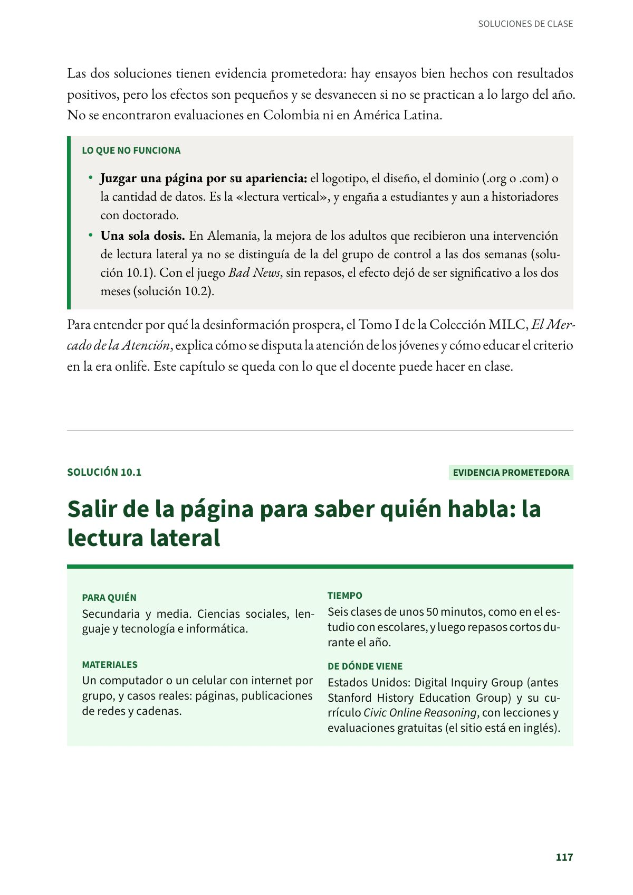
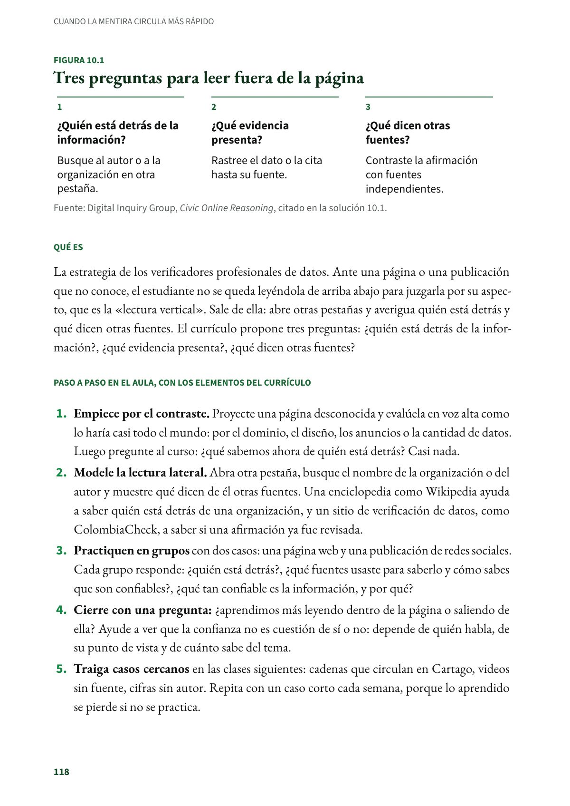
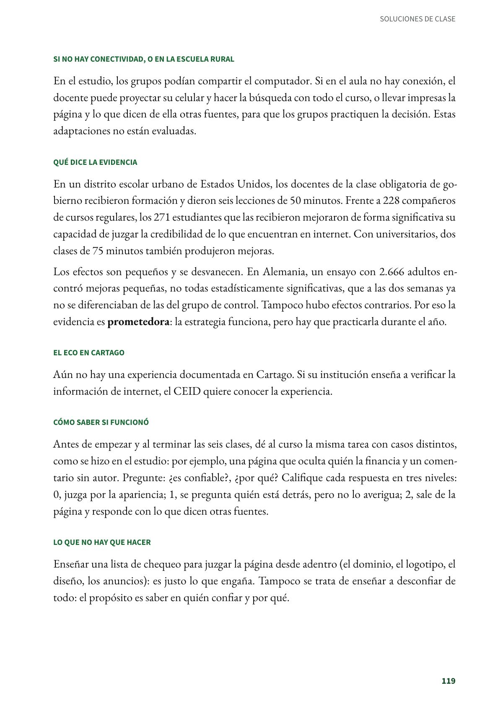
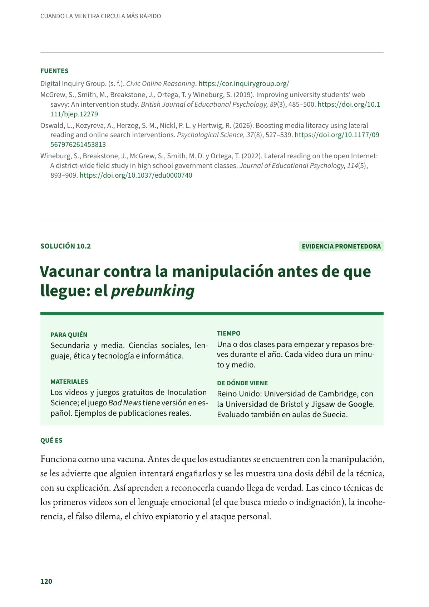

Salir de la página para saber quién habla: la lectura lateral
La estrategia de los verificadores profesionales de datos. Secundaria y media. Evidencia prometedora.
PDF · 4 págs. · 87 KBEn resumen
- Evidencia: prometedora.
- Para quién: Secundaria y media. Ciencias sociales, lenguaje y tecnología e informática.
- Tiempo: Seis clases de unos 50 minutos, como en el estudio con escolares, y luego repasos cortos durante el año.
- Materiales: Un computador o un celular con internet por grupo, y casos reales: páginas, publicaciones de redes y cadenas.
- De dónde viene: Estados Unidos: Digital Inquiry Group (antes Stanford History Education Group) y su currículo Civic Online Reasoning, con lecciones y evaluaciones gratuitas (el sitio está en inglés).
Qué es
La estrategia de los verificadores profesionales de datos. Ante una página o una publicación que no conoce, el estudiante no se queda leyéndola de arriba abajo para juzgarla por su aspecto, que es la «lectura vertical». Sale de ella: abre otras pestañas y averigua quién está detrás y qué dicen otras fuentes. El currículo propone tres preguntas: ¿quién está detrás de la información?, ¿qué evidencia presenta?, ¿qué dicen otras fuentes?
Paso a paso en el aula, con los elementos del currículo
- Empiece por el contraste. Proyecte una página desconocida y evalúela en voz alta como lo haría casi todo el mundo: por el dominio, el diseño, los anuncios o la cantidad de datos. Luego pregunte al curso: ¿qué sabemos ahora de quién está detrás? Casi nada.
- Modele la lectura lateral. Abra otra pestaña, busque el nombre de la organización o del autor y muestre qué dicen de él otras fuentes. Una enciclopedia como Wikipedia ayuda a saber quién está detrás de una organización, y un sitio de verificación de datos, como ColombiaCheck, a saber si una afirmación ya fue revisada.
- Practiquen en grupos con dos casos: una página web y una publicación de redes sociales. Cada grupo responde: ¿quién está detrás?, ¿qué fuentes usaste para saberlo y cómo sabes que son confiables?, ¿qué tan confiable es la información, y por qué?
- Cierre con una pregunta: ¿aprendimos más leyendo dentro de la página o saliendo de ella? Ayude a ver que la confianza no es cuestión de sí o no: depende de quién habla, de su punto de vista y de cuánto sabe del tema.
- Traiga casos cercanos en las clases siguientes: cadenas que circulan en Cartago, videos sin fuente, cifras sin autor. Repita con un caso corto cada semana, porque lo aprendido se pierde si no se practica.
Si no hay conectividad, o en la escuela rural
En el estudio, los grupos podían compartir el computador. Si en el aula no hay conexión, el docente puede proyectar su celular y hacer la búsqueda con todo el curso, o llevar impresas la página y lo que dicen de ella otras fuentes, para que los grupos practiquen la decisión. Estas adaptaciones no están evaluadas.
Qué dice la evidencia
En un distrito escolar urbano de Estados Unidos, los docentes de la clase obligatoria de gobierno recibieron formación y dieron seis lecciones de 50 minutos. Frente a 228 compañeros de cursos regulares, los 271 estudiantes que las recibieron mejoraron de forma significativa su capacidad de juzgar la credibilidad de lo que encuentran en internet. Con universitarios, dos clases de 75 minutos también produjeron mejoras.
Los efectos son pequeños y se desvanecen. En Alemania, un ensayo con 2.666 adultos encontró mejoras pequeñas, no todas estadísticamente significativas, que a las dos semanas ya no se diferenciaban de las del grupo de control. Tampoco hubo efectos contrarios. Por eso la evidencia es prometedora: la estrategia funciona, pero hay que practicarla durante el año.
El eco en Cartago
Aún no hay una experiencia documentada en Cartago. Si su institución enseña a verificar la información de internet, el CEID quiere conocer la experiencia.
Cómo saber si funcionó
Antes de empezar y al terminar las seis clases, dé al curso la misma tarea con casos distintos, como se hizo en el estudio: por ejemplo, una página que oculta quién la financia y un comentario sin autor. Pregunte: ¿es confiable?, ¿por qué? Califique cada respuesta en tres niveles: 0, juzga por la apariencia; 1, se pregunta quién está detrás, pero no lo averigua; 2, sale de la página y responde con lo que dicen otras fuentes.
Lo que no hay que hacer
Enseñar una lista de chequeo para juzgar la página desde adentro (el dominio, el logotipo, el diseño, los anuncios): es justo lo que engaña. Tampoco se trata de enseñar a desconfiar de todo: el propósito es saber en quién confiar y por qué.
Fuentes
Digital Inquiry Group. (s. f.). Civic Online Reasoning. cor.inquirygroup.org
McGrew, S., Smith, M., Breakstone, J., Ortega, T. y Wineburg, S. (2019). Improving university students' web savvy: An intervention study. British Journal of Educational Psychology, 89(3), 485–500. doi.org
Oswald, L., Kozyreva, A., Herzog, S. M., Nickl, P. L. y Hertwig, R. (2026). Boosting media literacy using lateral reading and online search interventions. Psychological Science, 37(8), 527–539. doi.org
Wineburg, S., Breakstone, J., McGrew, S., Smith, M. D. y Ortega, T. (2022). Lateral reading on the open Internet: A district-wide field study in high school government classes. Journal of Educational Psychology, 114(5), 893–909. doi.org
Así se ve en el libro
4 páginas


